XMB mock
The chosen direction for issue #271: a true XMB. Bare icons and thin type on a flowing wave, focus shown by brightness and glow, almost no rounded corners, hints in a quiet bottom row. Click any screen below to open it at that point. Everything is 960×544 and driven like the Vita: arrows D-pad, Enter Cross, Esc Circle, T Triangle, S Square, Q/E L/R, Space Start; clicks act as touch.
Open the mockOpen on device
Home: the XMB bar
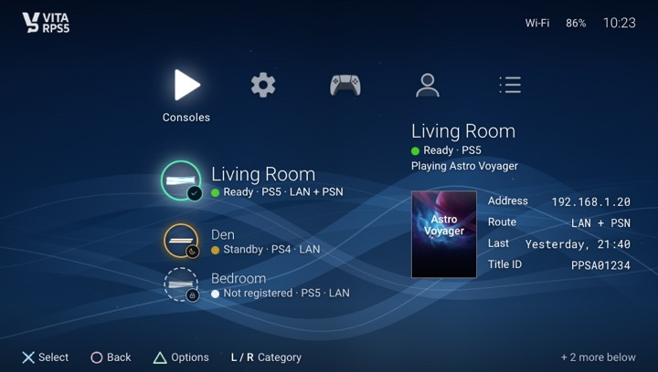
Consoles: ready, with game and cover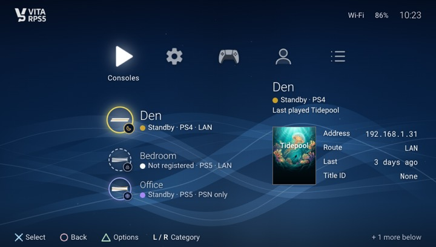
Console on standby (amber ring, moon badge)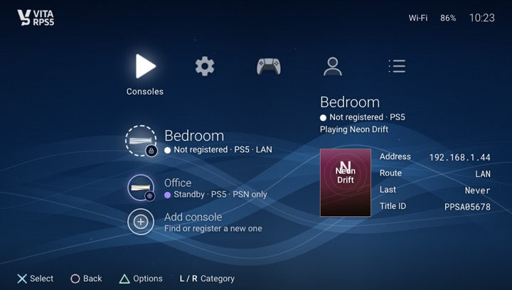
Not registered (dashed ring, lock badge, no cover art)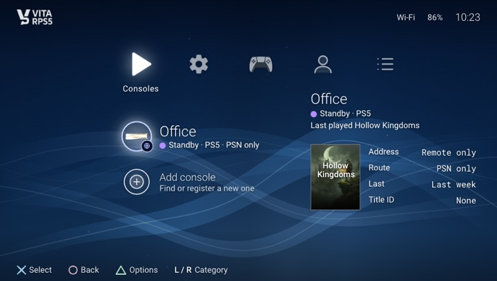
PSN-only route (purple ring, globe badge)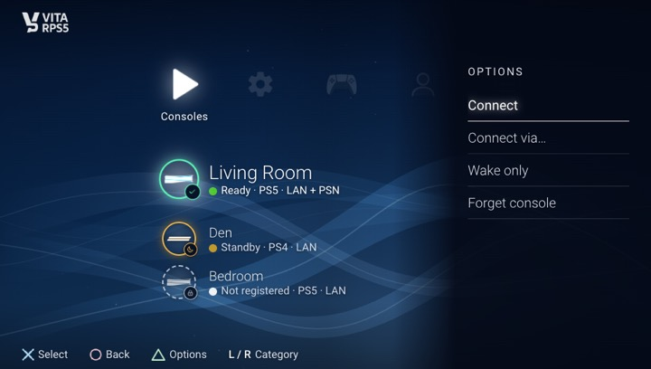
Triangle options column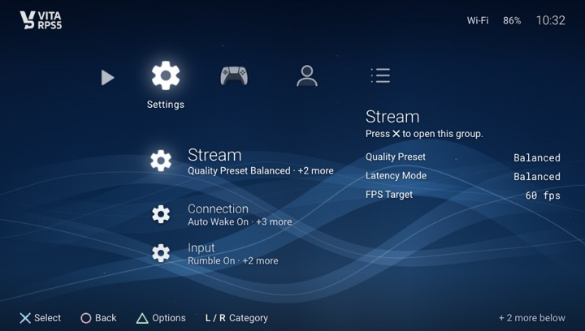
Settings category: five groups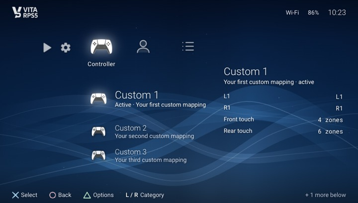
Controller category: three presets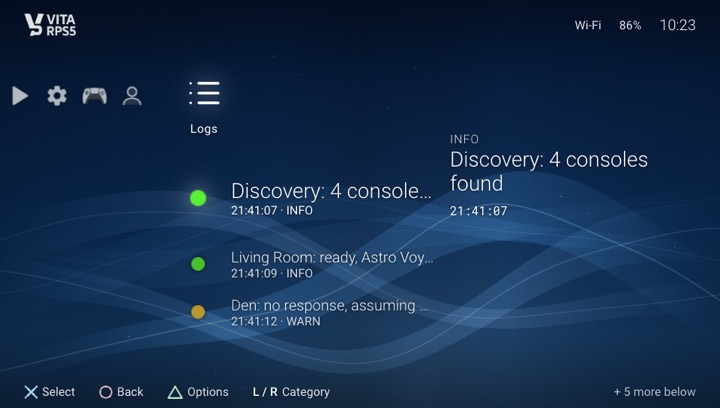
Logs categorySettings and Profile pages
Controller
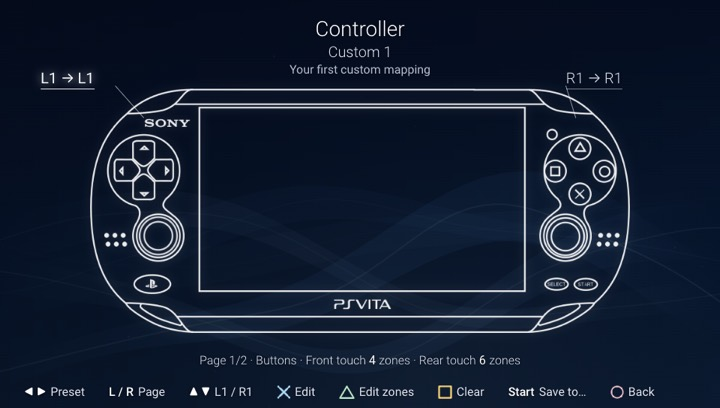
Summary: Vita diagram with L1 / R1 callouts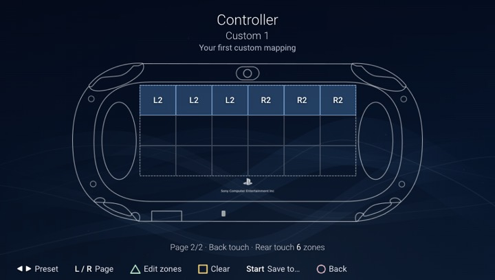
Summary page 2: rear touch zones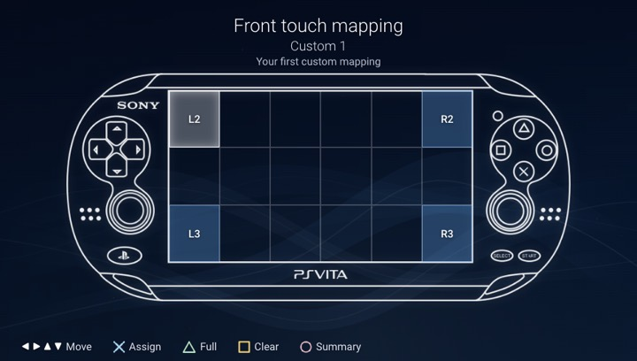
Front touch mapping (3×6 zones)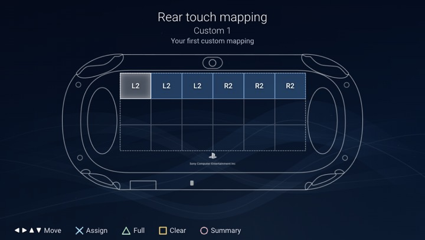
Rear touch mapping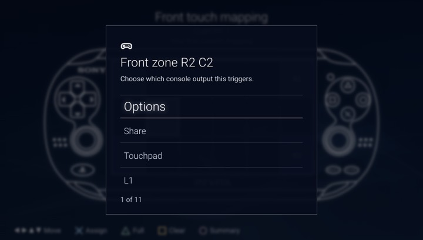
Assign an output to a zoneConnecting, streaming and popups
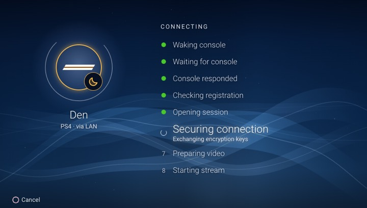
Connecting: 8 steps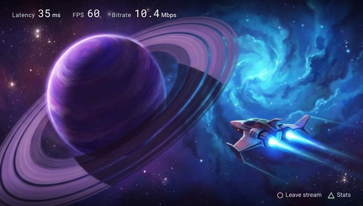
In-stream overlay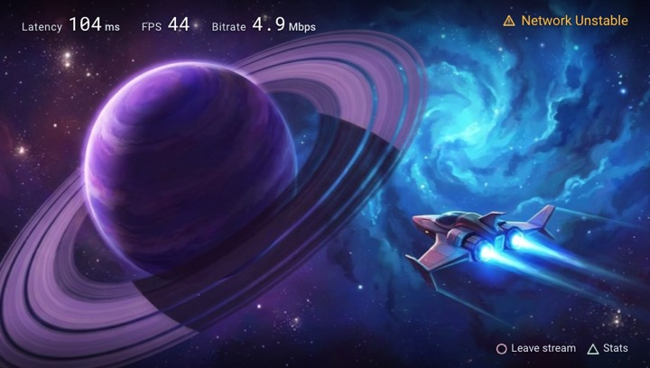
Network unstable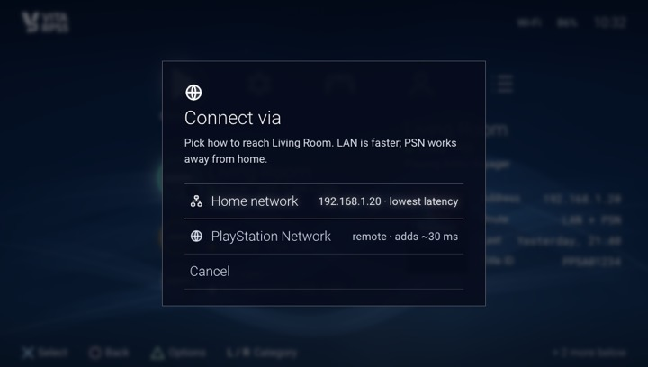
Connect via LAN or PSN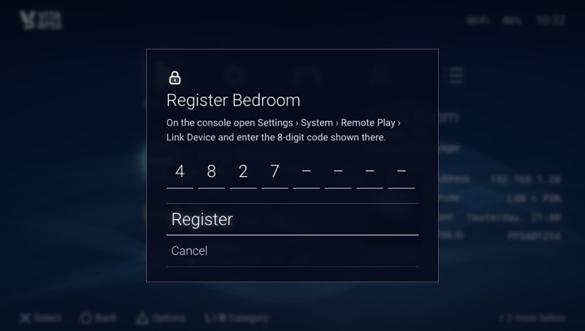
Register with an 8-digit PIN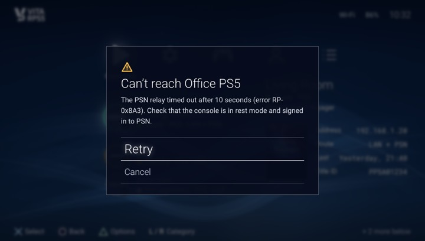
Error popupWhat is real
- Fonts: the app's own Roboto and Roboto Mono (
fonts/). - Images from the app's assets (
assets/): console cards, logos, nav icons, button symbols, status ellipses, controller diagrams, background. - Game covers and the stream scene are fictional generated art (
img/).
Notes
- Glow and blur here become baked textures on the Vita; see
FEASIBILITY.md. - PS4 images only exist as standby and off, so the ready PS4 colour is a tint in the mock.
- The device frame is a generic handheld.